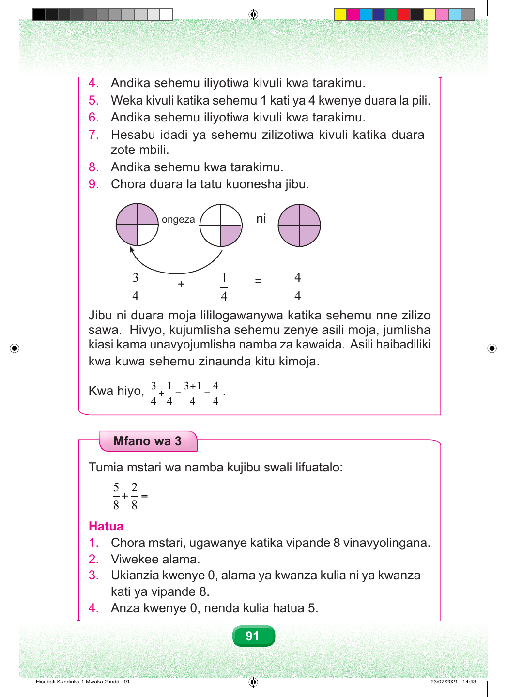

4. Andika sehemu iliyotiwa kivuli kwa tarakimu. 5. Weka kivuli katika sehemu 1 kati ya 4 kwenye duara la pili. 6. Andika sehemu iliyotiwa kivuli kwa tarakimu. 7. Hesabu idadi ya sehemu zilizotiwa kivuli katika duara zote mbili. 8. Andika sehemu kwa tarakimu. 9. Chora duara la tatu kuonesha jibu. ongeza ni 3 1 4 + = 4 4 4 Jibu ni duara moja lililogawanywa katika sehemu nne zilizo sawa. Hivyo, kujumlisha sehemu zenye asili moja, jumlisha kiasi kama unavyojumlisha namba za kawaida. Asili haibadiliki kwa kuwa sehemu zinaunda kitu kimoja. 3 1 3+1 4 Kwa hiyo, + = = . 4 4 4 4 Mfano wa 3 Tumia mstari wa namba kujibu swali lifuatalo: 5 2 + = 8 8 Hatua 1. Chora mstari, ugawanye katika vipande 8 vinavyolingana. 2. Viwekee alama. 3. Ukianzia kwenye 0, alama ya kwanza kulia ni ya kwanza kati ya vipande 8. 4. Anza kwenye 0, nenda kulia hatua 5. 91 Hisabati Kundirika 1 Mwaka 2.indd 91 23/07/2021 14:43